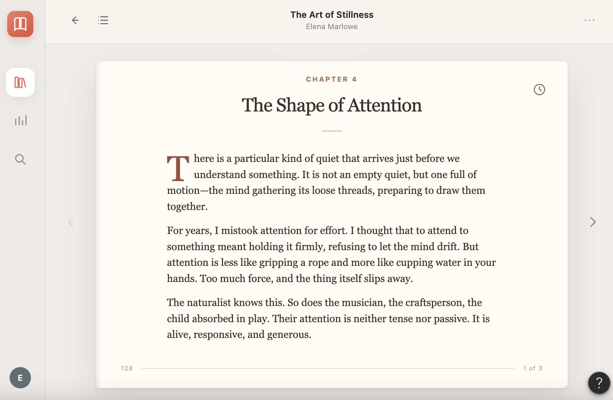
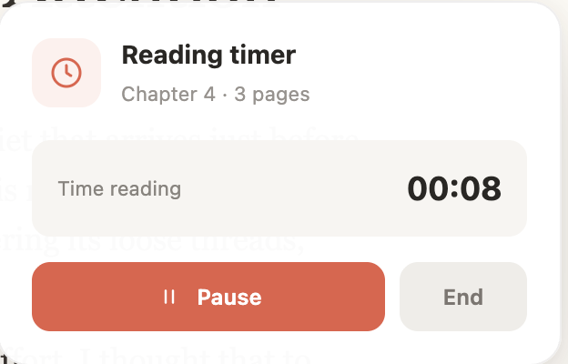
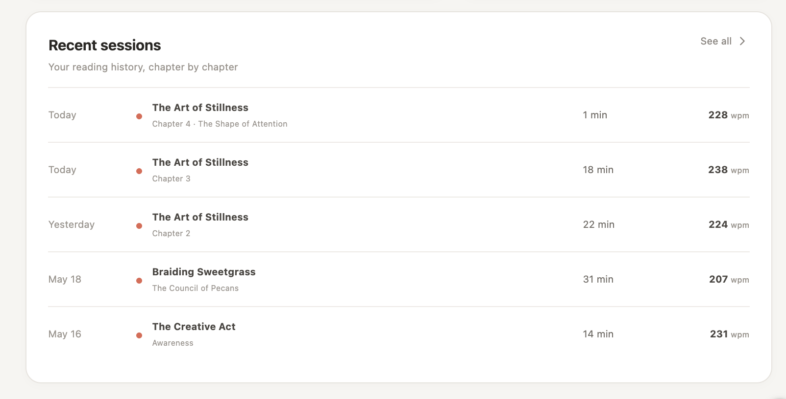

04 · Product Feature Concept
Apple Books —
Reading Activity
A reading-timer and activity concept that lets readers track chapter pace without leaving Apple Books, then review how their reading changes over time.
Independent concept project. Not affiliated with Apple.
- ROLE
- Product Designer
- FORMAT
- Independent feature concept
- FOCUS
- Reading behavior + progress tracking
- PROTOTYPE
- Figma Make


A small interruption in the reading flow
The concept came from something I was already doing while reading in Apple Books. I wanted to track how quickly I was reading a chapter, but the only way to time myself was to leave the book, open the Clock app, start a timer, and switch back.
That extra step felt especially noticeable because the measurement depends on time. Starting or stopping a timer in another app adds friction and makes the process less precise than it needs to be.
Instead of treating the timer as a separate tool, I explored what it could look like if Apple Books supported that behavior directly. The feature begins with a chapter timer, then uses completed sessions to build a longer-term view of reading pace across chapters and books.
How could Apple Books let a reader measure chapter pace without interrupting the reading experience?
Designing the timer around the chapter
The timer is intentionally lightweight. It appears as a clock icon in the reading interface and only expands when the reader chooses to use it.
At the start of a chapter, the reader can begin timing from a small modal that identifies the chapter and page count. While the session is active, elapsed time stays visible with options to pause or end the session manually. If the reader completes the chapter normally, the timer stops automatically after the final page and saves the result.
The reader sees what will be timed before starting the session.

The active state supports pausing or ending without taking over the reading experience.

The completion state confirms that the session was recorded and links to the broader activity view.
Turning individual sessions into useful history
A timer solves the immediate problem, but the session becomes more useful when it can be compared with previous reading.
Reading Activity brings completed sessions together in one place. The dashboard summarizes average pace, time read, and chapters completed, while the trend view shows how pace changes over time. A book-level comparison adds context by showing that reading speed may vary depending on what someone is reading.

The dashboard combines recent pace with time spent reading, chapters completed, trend data, and book-level comparisons.

The session log keeps the underlying history accessible so the reader can see when, what, and how long they read rather than only viewing an overall average.
Prototyping the full behavior in Figma Make
Figma Make helped me connect the timer states to the reading and activity views instead of designing them as isolated screens. The prototype made it easier to work through what happens before a session begins, while timing is active, and after the chapter is completed.
The main product decisions were about keeping the feature present without making it intrusive: the timer is optional, the active state remains compact, chapter completion handles the default stop, and the analytics live outside the reading screen until the reader chooses to view them.
START → READ → AUTO-SAVE → REVIEW
The prototype connects the in-book timer with the longer-term Reading Activity experience.
What I would evaluate next
The concept started with a personal need, so the next step would be understanding when reading-speed tracking is genuinely useful to other readers and when it risks becoming distracting.
I would want to test whether readers prefer timing complete chapters or shorter sessions, how often they return to pace history, and whether comparing speed across different books feels informative or misleading. I would also evaluate how much of the timer should remain visible while someone is reading so the feature supports the experience without changing the way they read.